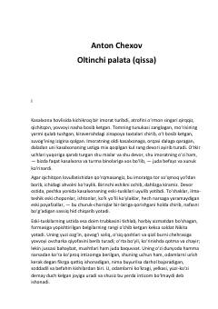

OPRuhiy kasallar shifoxonasidagi mahbuslar va jamiyatning shafqatsizligi haqidagi chuqur falsafiy asar.
Anton Chexovning ushbu mashhur qissasi ruhiy kasallar shifoxonasidagi og'ir muhit va u yerdagi bemorlarning fojiali taqdiri haqida hikoya qiladi. Asar jamiyatdagi adolatsizlik, insoniylik va ruhiy tushkunlik kabi chuqur falsafiy masalalarni o'rtaga tashlaydi.